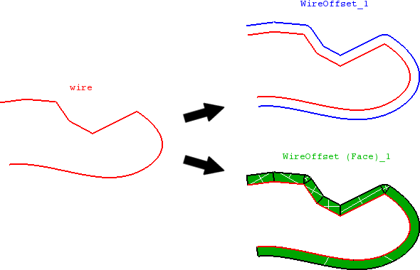

cfdmsh 4.0 documentation
cfdmsh 4.0 documentation cfdmsh 4.0 documentation


Creates an offset of a planar wire.
This function first reorder wire edge, then create edge offsets from them. The last step is to repair the offset: relimit intersecting offsets, extend them or creating linking arcs.
The user can also ask for creating faces linking the input wire to the offset.
def MakePlanarWireOffset( dist, wire = None, plane = None, np = 50, curv = True, simple = False, angle = 15, rebuild = True, tol = 1e-7, rev = False, single = True, add = True, infa = False, dim = 1 ):

| Name | Description | Type | GUI selection [?] | Selection by name [?] | Recursive [?] | Default value |
|---|---|---|---|---|---|---|
| dist | The offset distance. | Float | - | - | - | - |
| wire | The input wire. | Wire | yes | yes | yes | None |
| plane | See here. If the input wire is straight, the default plane is the OXY plane. | Face | - | yes | - | None |
| np | See here. | Integer | - | - | - | 50 |
| curv | See here. | Boolean | - | - | - | True |
| angle | The angle in degrees above which an arc is added between two offset edges. | Float | - | - | - | 15 |
| rebuild | In case dim = 2, defines if the input edge has to be rebuilt in the same way than the offset edge. | Boolean | - | - | - | True |
| tol | See here. | Float | - | - | - | 1e-7 |
| rev | See here. | Boolean | - | - | - | False |
| single | See here. | Boolean | - | - | - | True |
| add | See here. | Boolean | - | - | - | True |
| infa | See here. | Boolean | - | - | - | False |
| dim | See here. | Integer | - | - | - | 1 |
| dim Value [?] | single Value [?] | Type | Number | Name |
|---|---|---|---|---|
| 1 | False | Edge | n | "WireOffset (Edge)" |
| 1 | True | Wire or Compound of Edges | 1 | "WireOffset" |
| 2 | False | Face | n | "WireOffset (Face)" |
| 2 | True | Shell or Compound of Faces | 1 | "WireOffset (Faces)" |
from cfdmsh import * # To adapt to the cfdmsh installation method
disk = geompy.MakeDiskR(100, 1)
face = geompy.MakeFaceHW(100, 100, 1)
translation = geompy.MakeTranslation(face, 100, 0, 0)
partition = geompy.MakePartition([disk, translation])
wire = geompy.GetFreeBoundary(partition)[1][0]
AddToStudy(wire, "wire")
wire_offset_1 = MakePlanarWireOffset(30, wire)
wire_offset_2 = MakePlanarWireOffset(30, wire, rev = True)
wire_offset_3 = MakePlanarWireOffset(30, wire, rev = True, dim = 2)
-
cfdmsh 4.0 documentation
tougeron-cfd.com © 2016